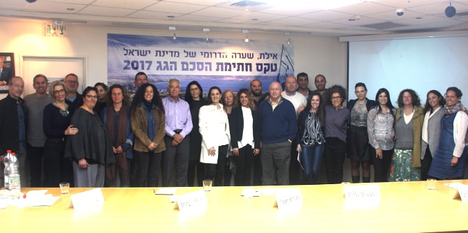

בפגישה תיאר ראש העירייה את אתגרי העיר, התכנון האסטרטגי ארוך הטווח וחשיבות ההכשרה למנהיגות. לאחריה נפגשו חברי ההנהלה של הקרן עם עמיתי התוכנית למנהיגות אזורית אילת-אילות – מפגש שהיווה הזדמנות עבור העמיתים לתאר את אתגרי המנהיגות המקומיים ואת השינויים שהם שואפים לקדם לשם שיפור איכות החיים בעיר ובאזור. חברי ההנהלה הביעו עניין רב בתחומי העיסוק המגוונים של המשתתפים ובתחומי האחריות הרחבים שהם מקדמים, והתרשמו מהתפתחות האזור ומחלקם המשמעותי של העמיתים בפיתוחו. באמצעות העמקה בטקסט "ערים ומסחר" מתוך הספר "הערים הסמויות מעין" מאת איטלו קאלווינו, דנו במושג ה"עירוניות" בהקשר המקומי.
לאחר מכן נפגשו חברי הנהלת הקרן עם
ד"ר חנן גינת, ראש המועצה האזורית חבל אילות, ושוחחו על ההתפתחויות האזוריות ועל חשיבות פיתוח מנהיגות אזורית המחויבת לקידום איכות החיים במרחב. במפגש עלה המקום הקוסמופוליטי הייחודי של אילת ואילות והאתגרים וההזדמנויות הטמונים בשער הדרומי לישראל. כחלק מזה, עלה נושא הידוק הקשרים עם ירדן וחיזוקה של עקבה כקשורה להתפתחות של אילת כעיר בינלאומית מרכזית לחבל גיאוגרפי זה. יום הביקור היווה יום השראה למנהלי התכנית ומשתתפיה.

{kind=link}